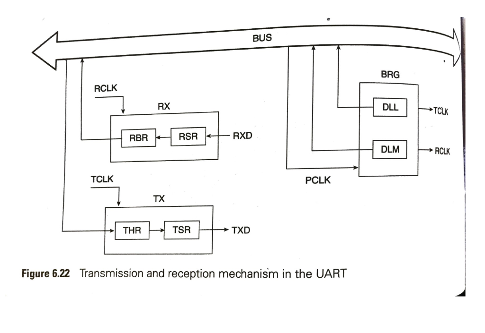
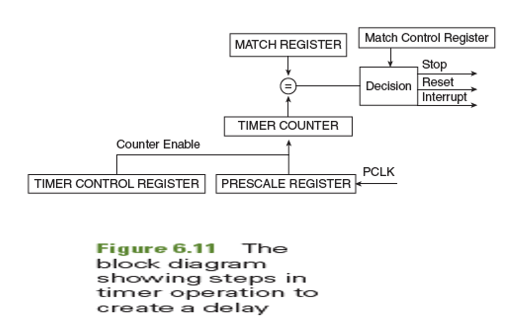
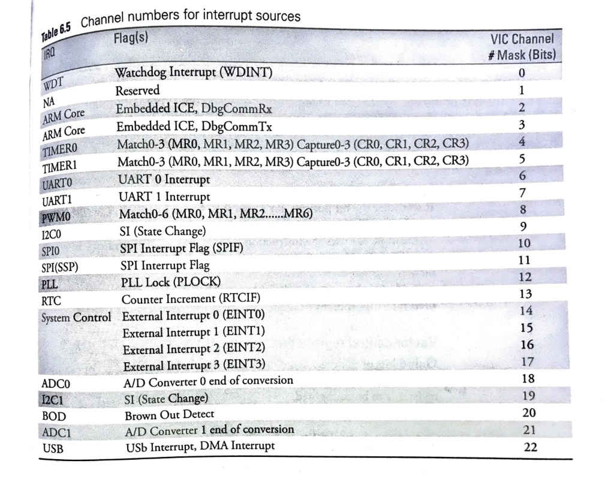
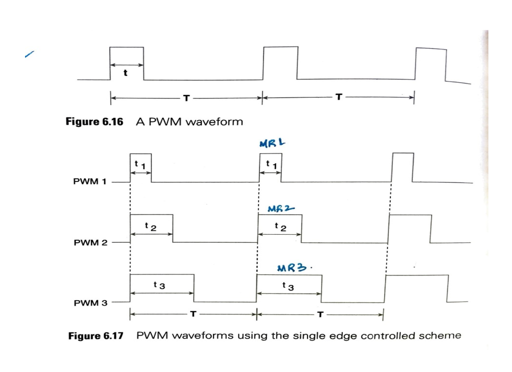
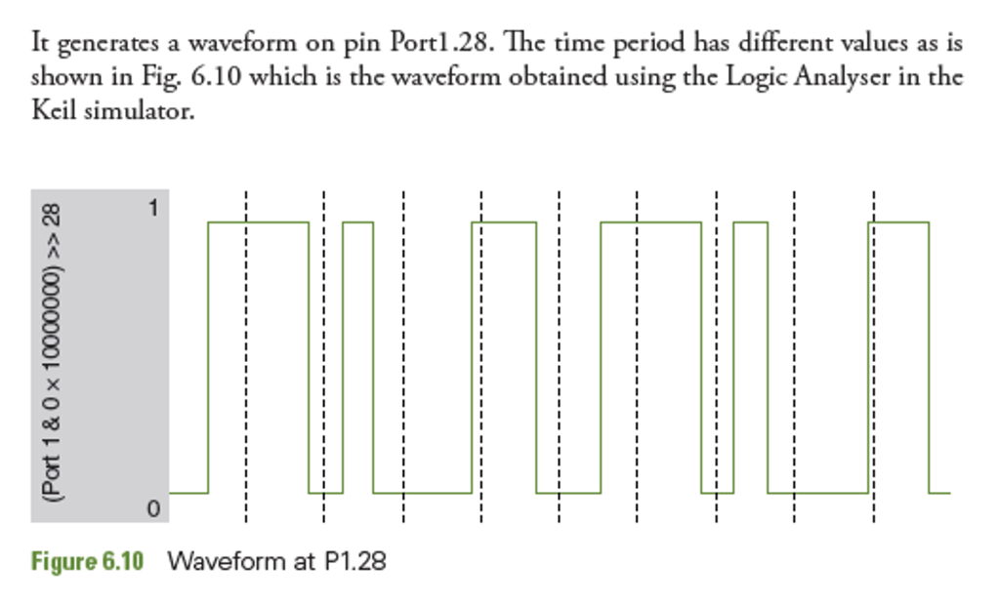

🎓 MSRIT/VTU Expert Faculty Study Portal | Assembly programming in high level language learning skills for embedded systems
ARM is a load-store architecture, meaning arithmetic instructions can only operate on registers. To read or write to memory, we use LDR (Load Register) and STR (Store Register) instructions.
ARM provides three flexible **indexing modes** to modify the target address while executing: 1. Pre-indexed: The address is calculated by adding an offset to the base register. The memory access occurs at this calculated address, but the base register itself is **not modified**. 2. Pre-indexed with Write-back (!): The address is calculated with the offset, memory access occurs at that address, and the base register is **updated** with the new address. 3. Post-indexed: The memory access occurs at the original address in the base register first. Then, the offset is added to update the base register.
LDR R0, [R1, #4] (reads from R1+4, R1 is unchanged).LDR R0, [R1, #4]! (reads from R1+4, R1 updates to R1+4).LDR R0, [R1], #4 (reads from R1, R1 updates to R1+4).LDR R0, [R1, R2, LSL #2]).• SEE 2025 Q7(b): What is the content of R6 after execution of following instructions? Given that R6=0x44001100 and R2=0x04: (i) LDR R2, [R6, #0x0056]!, (ii) STR R1, [R6, R2]!, (iii) LDR R3, [R6, LSL #4]. Justify. (6 Marks)
• SEE 2024 Q7(c): Detail the indexing modes of LDR/STR instructions in ARM. (6 Marks)
• SEE 2023(O) Q7(a): Discuss the use of Load and Store instructions in an ARM programming with appropriate examples for each. (10 Marks)
Pre-indexed accesses base + offset without updating the base. Pre-indexed write-back (!) updates the base with the new address. Post-indexed accesses the base first, then adds the offset.
In assembly programming, we often need to save multiple registers to the stack at the start of a function, or restore them when exiting. Instead of executing 10 separate load/store instructions, ARM provides **LDM (Load Multiple)** and **STM (Store Multiple)** instructions.
These instructions can load or store any subset of the 16 registers (R0-R15) in a single instruction. To manage address updates, ARM provides four suffixes: - **IA (Increment After):** Increments address after each register transfer. - **IB (Increment Before):** Increments address before each transfer. - **DA (Decrement After):** Decrements address after each register transfer. - **DB (Decrement Before):** Decrements address before each transfer.
LDMIA R1!, {R2-R5}).• SEE 2025 Q8(a): List the steps involved in execution of the following Instructions: (i) STMDB R1!{R7,R2-R4} if R1=0X44000078, (ii) LDMIA R7!{R0-R5}. (8 Marks)
LDM and STM transfer multiple registers between CPU and RAM, indexed using IA, IB, DA, DB suffixes. Registers are always transferred in ascending index order.
Assembler directives are special instructions written in assembly source files that are interpreted by the compiler/assembler (e.g. Keil armasm) rather than being translated directly into CPU opcodes. They help configure memory sections and allocate space: - AREA: Defines a contiguous chunk of code or data. Suffixes like `CODE` or `DATA` define memory regions, and `READONLY` or `READWRITE` enforce permissions. - ENTRY: Declares the exact point where code execution begins. A program must contain exactly one ENTRY. - EQU (Equate): Assigns a symbolic name to a constant value, like `#define` in C. Does not consume RAM. - DCD (Define Constant Doubleword): Reserves 4-byte (32-bit) words of memory initialized to specified values. - DCW / DCB: Reserves 2-byte halfwords (DCW) or 1-byte bytes (DCB) initialized to specified values. - END: Informs the assembler that the source file has ended.
• SEE 2024 Q7(b): Discuss the following Assembler directives: i. AREA, ii. DCD, DCW, iii. ENTRY, iv. EQU. (8 Marks)
Assembler directives (AREA, ENTRY, EQU, DCD) configure compiling sections, allocate variable space, and establish entry points without generating direct CPU execution commands.
The **LPC2148** is a highly popular, low-power 16/32-bit microcontroller manufactured by NXP Semiconductors. It is built around an **ARM7TDMI-S** core. It integrates multiple useful hardware components directly onto a single silicon chip:
• SEE 2025 Q8(b) / SEE 2024 Q8(b): List the important features of LPC 214x series. (6 Marks)
LPC2148 SoC features an ARM7 core, 512KB Flash, 40KB RAM, dual ADCs, a DAC, a USB controller, and low-power VPB bus clock dividers.
The LPC2148 integrates two levels of buses internally to balance speed and power efficiency: - AHB System Bus (Advanced High-Performance Bus): Connecting the ARM7 processor, high-speed RAM, DMA, and Flash memory. Runs at full CPU speed (cclk). - VPB / APB Bus (VLSI Peripheral Bus): Connects slower modules like UARTs, SPI, GPIO ports, and Timers. - **VPB Clock Divider:** A programmable hardware bridge that divides the system clock (cclk) to generate the peripheral clock (pclk) at 1/4, 1/2, or equal frequency. Lowering pclk reduces peripheral dynamic power consumption dramatically.
• MAKEUP2023 Q7(b) / SEE 2023 Q7(b) / SEE 2023(O) Q8(a): Briefly discuss the internal BUS structure of the LPC 214x family with appropriate diagram. (10 Marks)
LPC2148 isolates high-speed system components (on AHB) from slower, lower-power peripherals (on APB) using a VPB Clock Divider bridge to conserve power.
Writing bare-metal microcontroller code in C requires accessing physical hardware registers at defined 32-bit hex addresses. We achieve this by defining **volatile pointers** in C. Volatile tells the compiler that the register value can change asynchronously outside the program flow (due to external hardware events), forcing the compiler to generate actual load/store instructions instead of optimizing the reads away.
Example: In LPC2148, Port 0 IO Direction Register is located at address 0xE0028008. We define it in C as:
#define IODIR0 (*((volatile unsigned int *) 0xE0028008))IODIR0 = 0x000000FF; (sets pins P0.0 to P0.7 as outputs).
Embedded C uses volatile pointer declarations mapped to physical register memory addresses, preventing compilers from optimizing away critical I/O transactions.
To transmit and receive serial strings in LPC2148, we use the **UART1 (Universal Asynchronous Receiver-Transmitter)** peripheral. Serial communication requires us to translate parallel data on the internal bus into serial bit streams over a single copper line (TxD1) and vice-versa (RxD1). To achieve this at standard communication speeds (Baud Rates), we configure multiple internal registers:
UART Serial Hardware Pipeline: The block diagram below illustrates the exact transmission and reception pathways in LPC2148 UART1. Parallel data on the internal BUS is written to the Transmitter Holding Register (THR), which transfers it to the Transmitter Shift Register (TSR). Under the control of the Transmit Clock (TCLK), data is shifted out bit-by-bit onto the TXD pin. Conversely, incoming serial data on the RXD pin enters the Receiver Shift Register (RSR) and is transferred to the Receiver Buffer Register (RBR) when fully assembled, under the control of the Receive Clock (RCLK). The Baud Rate Generator (BRG) takes the peripheral clock (PCLK) and divides it based on values in the Divisor Latch LSB (DLL) and MSB (DLM) registers to output TCLK and RCLK.

• MAKEUP2023 Q7(a) / SEE 2023 Q8(b) / SEE 2023(O) Q8(b) / SEE 2025 Q7(c): Write a C program to display a string in the serial window of UART1. (10 Marks)
• SEE 2024 Q8(a): Draw the block diagram showing the transmission and reception mechanism in UART and explain its registers. (8 Marks)
How to write: When asked for UART transmission mechanism, always draw the dual-register pipeline (THR & TSR for TX, RBR & RSR for RX). Clearly explain that TSR and RSR are not directly addressable by programmers; instead, we access them via THR and RBR. Always write down the baud rate equation: $$ ext{Baud Rate} = rac{ ext{pclk}}{16 imes (256 imes ext{U1DLM} + ext{U1DLL})}$$ viva focus: Why is the factor 16 present in the formula? (UART uses 16x oversampling to identify start/stop bits in the center of the pulse, reducing reception noise). Memory Trick: UART Setup = P.F.D.L.L. (Pinsel configuration, Frame format via LCR, DLAB set, Load DLL/DLM, Lock settings by clearing DLAB).
UART1 serial transfers use a dual-stage buffer (THR -> TSR for transmission, RSR -> RBR for reception) regulated by divisor latches (DLL/DLM) unlocked via DLAB, with transmission status polled through the LSR register.
To implement precise, deterministic timing delays without relying on processor interrupt pipelines, we utilize LPC2148's internal 32-bit Timer0 in polled mode. In this mode, the CPU actively queries standard peripheral registers in a tight loop to detect when the elapsed clock cycles match a predefined threshold. The core components of the timer subsystem are:
Timer delay mechanism: The block diagram below shows how the LPC2148 timer subsystem works. The peripheral clock (PCLK) feeds into the Prescale Register (PR) divisor block. The resulting scaled clock feeds the Timer Counter (TC). The Timer Control Register (TCR) provides the Counter Enable control signal to enable the timer counter. The current value of TC is continuously compared with the Match Register (MR). When the values match, the comparator (=) sends a signal to the Decision Block. The Match Control Register (MCR) determines the action, sending signals to either Stop the timer, Reset TC, or generate an Interrupt. In interrupt-driven mode, these interrupts are routed through the Vectored Interrupt Controller (VIC). The VIC maps different peripheral interrupts (WDT, Timers, UARTs) to physical hardware channels (as shown in Table 6.5) to route them to the ARM core.


• SEE 2025 Q8(c): List and explain registers used in timer/counter units in the polled mode. (6 Marks)
• SEE 2023 Q8(a): Differentiate between polled mode and interrupt mode of timer operation in LPC2148. (6 Marks)
How to write: When explaining timer operations, always write down the register sizes (all are 32-bit registers). Show the formula to calculate the prescaler value: \( ext{PR} = ( ext{pclk} imes ext{delay\_unit}) - 1\). Emphasize that in polled mode, the MR flag must be cleared manually by writing a logical '1' to the corresponding bit of T0IR (writing 0 has no effect). **viva question**: What is the VIC channel number for Timer 0? (Channel 4, as shown in Table 6.5, with WDT at channel 0 and UART0 at channel 6). Memory Trick: Timer Delay = T.P.M.T.P. (TCR Reset, Prescale Load, Match register load, TCR start, Poll IR flag).
Timer delays scale pclk down via T0PR to drive T0TC, comparing it to thresholds loaded in T0MR0-3. Polling checks T0IR flags vectoring matches, which must be cleared by writing a logical 1.
When a subroutine is called (via BL), or when an exception occurs, the processor must save the active execution context (registers R0-R12, LR) onto the stack so it doesn't get overwritten. This is called **Context Saving**.
ARM uses a Full Descending stack. To push a block of registers, we use STMDB (Store Multiple Decrement Before). To restore them upon exit, we use LDMIA (Load Multiple Increment After).
- **Push Sequence:** The stack pointer (SP) is decremented first, then the registers are stored.
- **Pop Sequence:** The registers are loaded from the stack, and then the SP is incremented back.
- **Symmetric Restore:** The POP instruction can load the old LR straight into the PC (e.g. LDMIA SP!, {R4-R7, PC}), returning from the function in a single instruction.
Context saving pushes active registers to the stack using STMDB upon entry, and restores them using LDMIA upon exit, maintaining stack alignment.
Microcontrollers control and read external hardware components like switches, LEDs, and relays through their **General Purpose Input/Output (GPIO)** pins. In LPC2148, Port 0 and Port 1 pins are multiplexed to perform different tasks. We configure basic registers to interact with external systems. To generate repeating square waves or manage digital actuators, we configure:
For more sophisticated analog output simulations (like brightness control or motor speed regulation), we use **Pulse Width Modulation (PWM)**. Instead of changing physical voltages, we switch a digital pin HIGH and LOW extremely rapidly. The ratio of ON-time to the total period determines the average power delivered, known as the **Duty Cycle**.
PWM single-edge and Logic Analyzer waveforms: The waveforms below illustrate single-edge controlled PWM signals and Keil simulation logs. In a standard PWM wave (Figure 6.16), \(t\) is the active HIGH duration, and \(T\) is the total repeating cycle period. In the single-edge controlled scheme (Figure 6.17), all PWM channels (PWM1, PWM2, PWM3) begin their HIGH cycle simultaneously at the period boundary. The output remains HIGH until the timer counter matches the individual match registers: \(t_1\) for PWM1 (controlled by match register MR1), \(t_2\) for PWM2 (MR2), and \(t_3\) for PWM3 (MR3). When a match occurs, the output toggles LOW and stays LOW until the timer resets upon matching MR0 (period T). Figure 6.10 shows the exact logic analyzer waveform captured in the Keil Simulator at pin Port 1.28. Software toggles are simulated to show how logic high (1) and logic low (0) periods vary precisely based on register-based loops.


How to write: Students often write `IOSET = 0;` to clear pins. Explain clearly that writing 0 to IOSET or IOCLR has absolutely NO effect on physical pins; you must write a 1 to IOCLR to clear pins. Draw the single-edge PWM waveforms showing aligned rising edges and staggered falling edges. Memory Trick: GPIO Setup = P.D.S.C. (Pinsel select, Direction config, Set HIGH via IOSET, Clear LOW via IOCLR).
GPIO operations manage pin directions via IODIR, drive pins HIGH via IOSET, drive LOW via IOCLR, and read via IOPIN. PWM outputs simulate analog states by toggling pins within a period \(T\) aligning with PWMMR0 and PWMMR1-6 divisor latches.
Below is the complete C implementation to configure LPC2148 UART1 for 9600 baud rate (assuming pclk = 15MHz) and transmit a string:
#include <lpc214x.h>
void init_uart1(void) {
// 1. Configure Pin Multiplexing: Set P0.8 as TxD1 and P0.9 as RxD1
PINSEL0 |= 0x00050000;
// 2. Configure UART1 Frame Format: 8-bit length, 1 Stop bit, Disable parity
U1LCR = 0x03;
// 3. Set DLAB = 1 to configure baud rate divisors
U1LCR |= 0x80;
// 4. Calculate Divisor Value: Divisor = pclk / (16 * BaudRate)
// Divisor = 15,000,000 / (16 * 9600) = 97.65 ≈ 98 (0x0062)
U1DLL = 0x62; // Low byte
U1DLM = 0x00; // High byte
// 5. Clear DLAB = 0 to lock baud rate settings
U1LCR &= ~0x80;
}
void uart1_send_char(char ch) {
// Poll LSR Bit 5 (THRE) until Transmit Holding Register is empty
while (!(U1LSR & 0x20));
U1THR = ch; // Send character
}
void uart1_send_string(char *str) {
while (*str) {
uart1_send_char(*str++);
}
}Evaluate address calculations and trace R6 and R2. Given initial registers:
LDR R2, [R6, #0x0056]! (Pre-indexed with Write-Back):STR R1, [R6, R2]! (Pre-indexed with Register Offset and Write-Back):LDR R3, [R6, LSL #4] (Syntactically invalid without a base / offset register):LDR R3, [R6, R2, LSL #4].Trace the step-by-step memory updates during multi-register block transfers (SEE 2025 PYQ):
STMDB R1!, {R7, R2-R4}Step-by-step Hardware Trace (Decrement Before DB):
Answer:
The Fibonacci sequence starts as: 1, 1, 2, 3, 5, 8... where F(n) = F(n-1) + F(n-2). Below is the complete Keil-compliant ARM assembly program to compute and store the numbers in RAM:
AREA Fibonacci, CODE, READONLY
ENTRY
MOV R0, #10 ; Count of numbers to generate
LDR R1, =RESULT ; Load pointer to destination memory
MOV R2, #0 ; F(n-2) = 0
MOV R3, #1 ; F(n-1) = 1 (First Fibonacci stored)
loop ADD R4, R2, R3 ; F(n) = F(n-1) + F(n-2)
STR R4, [R1], #4 ; Store F(n) in memory, post-increment pointer by 4
MOV R2, R3 ; Update F(n-2) = F(n-1)
MOV R3, R4 ; Update F(n-1) = F(n)
SUBS R0, R0, #1 ; Decrement count
BNE loop ; Repeat until R0 is 0
stop B stop ; Halt execution
AREA DataArea, DATA, READWRITE
RESULT DCD 0 ; Allocate memory block for 10 words
ENDAnswer:
Below is the complete C program. The pclk is assumed to be 15MHz. Divisor value = 15,000,000 / (16 * 9600) = 97.65 ≈ 98 = 0x62.
Hardware Pipeline Operations: Parallel data from the bus is loaded into the Transmit Holding Register (U1THR). The UART shift clock (TCLK) is derived from PCLK divided by the Baud Rate Generator (BRG), which consists of the divisor latch registers U1DLL and U1DLM. The data in THR is moved into the Transmit Shift Register (U1TSR), where it is shifted out bit-by-bit onto the physical TXD1 pin.
#include <lpc214x.h>
void init_uart1(void) {
PINSEL0 |= 0x00050000; // Configure P0.8 as TxD1, P0.9 as RxD1
U1LCR = 0x83; // Set DLAB=1 and configure 8-bit word length
U1DLL = 0x62; // Set Divisor Latch LSB = 98
U1DLM = 0x00; // Set Divisor Latch MSB = 0
U1LCR = 0x03; // Clear DLAB=0 to lock settings
}
void uart1_send_char(char ch) {
while (!(U1LSR & 0x20)); // Poll THRE flag until transmit buffer is empty
U1THR = ch; // Write character to buffer
}
void uart1_send_string(char *str) {
while (*str) {
uart1_send_char(*str++);
}
}
int main(void) {
init_uart1(); // Setup port
uart1_send_string("MICROCONTROLLERS\r\n"); // Transmit
while (1); // Halt
}Instructions:
(i) LDR R2, [R6, #0x0056]!
(ii) STR R1, [R6, R2]!
(iii) LDR R3, [R6, R2, LSL #4]
Answer:
LDR R2, [R6, #0x0056]!STR R1, [R6, R2]!LDR R3, [R6, R2, LSL #4]Answer:
(i) STMDB R1!, {R7, R2-R4}:
This instruction pushes 4 registers (R2, R3, R4, R7) onto the stack. Suffix DB (Decrement Before) decrements R1 by 4 bytes before each register is written. Registers are stored in descending order of index (highest index at highest address):
| Step | Active Address | Stored Register | Description |
|---|---|---|---|
| 1 | 0x44000074 | R7 | R1 decremented to 0x74, stores R7 |
| 2 | 0x44000070 | R4 | R1 decremented to 0x70, stores R4 |
| 3 | 0x4400006C | R3 | R1 decremented to 0x6C, stores R3 |
| 4 | 0x44000068 | R2 | R1 decremented to 0x68, stores R2 |
• **Base Update:** R1 is updated with the final address: **Final R1 = 0x44000068**.
(ii) LDMIA R7!, {R0-R5}:
This instruction loads 6 registers (R0, R1, R2, R3, R4, R5) from memory starting at address in R7. Suffix IA (Increment After) reads the register first, and then increments R7 by 4 bytes:
Answer:
Below is the complete assembly program. The subroutine SQU takes the value in R2, squares it, and returns the result in R4. The main routine loops 5 times and sums the results.
AREA SumSquares, CODE, READONLY
ENTRY
MOV R0, #5 ; Counter = 5
MOV R1, #0 ; R1 will hold the total sum of squares
MOV R2, #1 ; Starting number = 1
loop BL SQU ; Call subroutine SQU. LR holds return address
ADD R1, R1, R4 ; Sum = Sum + square
ADD R2, R2, #1 ; Next number
SUBS R0, R0, #1 ; Decrement count
BNE loop ; Repeat
stop B stop ; Halt execution
; SUBROUTINE SQU: Computes square of R2, returns in R4
SQU MUL R4, R2, R2 ; R4 = R2 * R2
MOV PC, LR ; Return to caller
ENDAnswer:
Below is the complete assembly program. We load 16-bit numbers using LDRH (Load Register Halfword) from ROM and accumulate them in a 32-bit register, then divide by 10 using a subtraction loop.
AREA Average, CODE, READONLY
ENTRY
MOV R0, #10 ; Loop counter = 10
LDR R1, =SOURCE ; Load ROM address of numbers
MOV R2, #0 ; R2 will hold the running sum
loop LDRH R3, [R1], #2 ; Load 16-bit number, post-increment pointer by 2 bytes
ADD R2, R2, R3 ; Sum = Sum + number
SUBS R0, R0, #1 ; Decrement count
BNE loop ; Repeat
; Perform Division by 10 (R2 / 10):
MOV R4, #0 ; R4 will hold the quotient (average)
div CMP R2, #10 ; Compare Sum with 10
BLT done ; If Sum < 10, division complete
SUB R2, R2, #10 ; Sum = Sum - 10
ADD R4, R4, #1 ; Quotient++
B div
done LDR R5, =AVERAGE ; Load RAM location pointer
STR R4, [R5] ; Store average in RAM
stop B stop ; Halt
AREA DataArea, CODE, READONLY
SOURCE DCW 12, 34, 56, 78, 90, 120, 340, 560, 780, 900 ; ROM data array
AREA ResultArea, DATA, READWRITE
AVERAGE DCD 0 ; Allocate space in RAM for result
ENDAnswer:
1. Single-Edge Controlled PWM Waveform Mechanics:
In single-edge controlled PWM, the rising edge of all active channels is aligned with the start of the period interval. The total waveform cycle period \(T\) is determined by the Match Register 0 (PWMMR0). The individual channel match registers (e.g., PWMMR1 for PWM channel 1) store the threshold count representing the duty cycle duration. The operation steps are:
PWMMR1. When \( ext{PWMTC} == ext{PWMMR1} \), the comparator triggers and drives the PWM output pin LOW.PWMMR0. When \( ext{PWMTC} == ext{PWMMR0} \), the counter is reset to 0, driving the PWM output pin HIGH again, starting the next cycle.2. Register Descriptions for LPC2148 PWM:
3. Embedded C Program for 50% Duty Cycle PWM Waveform:
Assuming pclk = 15MHz. We want a PWM frequency of 10kHz. Total period count \(PWMMR0 = 15,000,000 / 10,000 = 1500\). For a 50% duty cycle, we set \(PWMMR1 = 1500 imes 0.50 = 750\).
#include <lpc214x.h>
void init_pwm1(void) {
// 1. Configure Pin Multiplexing: Set P0.0 as PWM1 (using PINSEL0 Bits 1:0 = 10)
PINSEL0 = (PINSEL0 & ~0x00000003) | 0x00000002;
// 2. Set Period and Duty Cycle match counts
PWMMR0 = 1500; // Total cycle period (T) = 1500 clock cycles (10kHz)
PWMMR1 = 750; // High pulse width (t) = 750 clock cycles (50% Duty Cycle)
// 3. Configure Match Control Register: Reset PWMTC when it matches PWMMR0
PWMMCR = 0x00000002; // Bit 1 = 1 (Reset on MR0)
// 4. Configure PWM Control Register: Enable PWM1 output and set to single-edge
PWMPCR = 0x00000200; // Bit 9 = 1 (Enable PWM1 output), Bits 2-6 = 0 (Single-edge)
// 5. Load shadowed match registers using Latch Enable Register
PWMLER = 0x03; // Latch MR0 and MR1 updates
// 6. Start the PWM timer
PWMTCR = 0x09; // Bit 0 = 1 (Counter Enable), Bit 3 = 1 (PWM Mode Enable)
}
int main(void) {
init_pwm1(); // Initialize PWM channel 1
while (1); // Loop forever
}